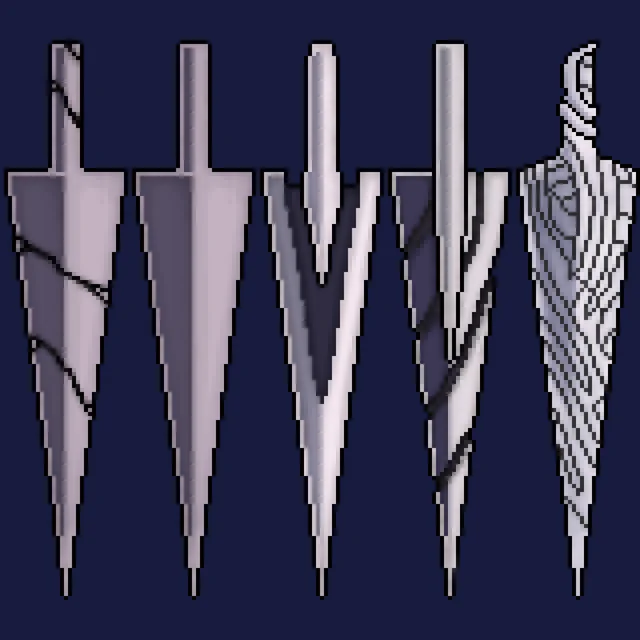
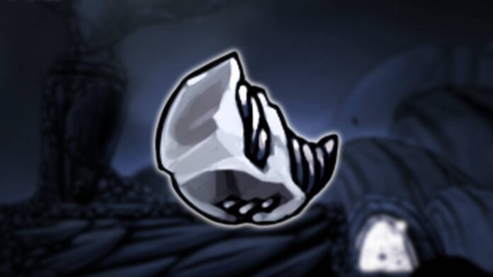
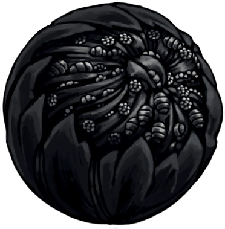

O prego é uma habilidade essencial para o protagonista de Hollow Knight, permitindo que ele ataque inimigos e interaja com o ambiente. O prego é uma extensão do corpo do personagem, usado para perfurar inimigos e objetos, e é a principal forma de combate no jogo. Ele pode ser aprimorado ao longo da jornada, aumentando seu alcance e poder de ataque, o que é crucial para enfrentar os desafios cada vez mais difíceis do reino de Hallownest.
O prego é uma ferramenta versátil que o personagem pode usar para explorar o mundo de Hollow Knight, permitindo que ele alcance áreas inacessíveis e derrote inimigos poderosos. Dominar o uso do prego é fundamental para progredir no jogo e enfrentar os desafios que surgem ao longo da jornada.
Ao longo do jogo, os jogadores podem aprimorar o prego, tornando-o mais poderoso e eficaz em combate. O prego é uma parte fundamental da estratégia de combate em Hollow Knight, permitindo que os jogadores enfrentem inimigos e chefes com confiança e habilidade.
A versão melhorada do prego, conhecida como "Prego de Cristal", é uma forma mais poderosa do prego, com maior alcance e dano, tornando o personagem mais eficaz em combate e capaz de enfrentar desafios ainda maiores no reino de Hallownest.

O prego possue 3 níveis de aprimoramento.
Para obter o prego, o jogador deve encontrar e coletar os itens necessários em diferentes locais do jogo.
Os principais objetos usados para aprimorar o prego são:

